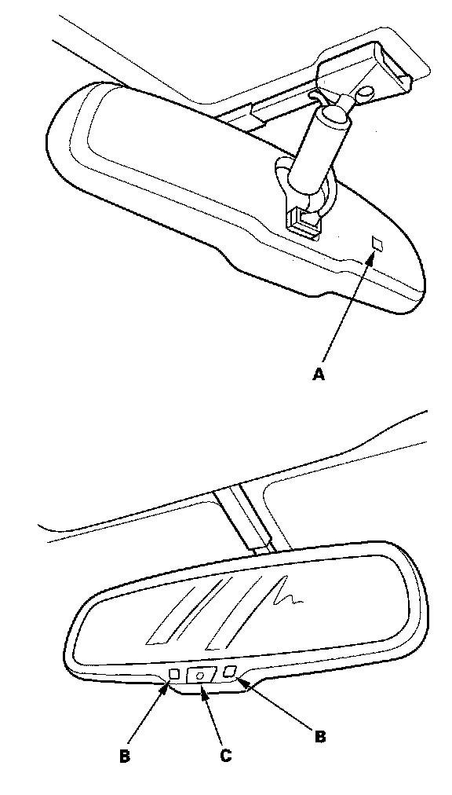

Mirrors: Description and Operation
Automatic Dimming Inside MirrorSystem Description

Canada models
The automatic dimming inside mirror has a front-facing lux level sensor (A), a rear-facing lux level sensors (B), and a control unit. The control unit receives signals from each sensor. Based on the difference between the two lux levels (the light outside the vehicle and the light from the headlights of the other vehicle, etc.), the control unit controls the electro-chromic gel to reduce the glare. This dimming function is canceled when the transmission is in reverse, or when the automatic dimming off switch (C) is turned OFF.